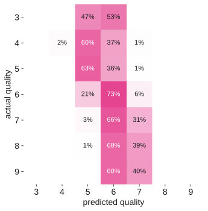
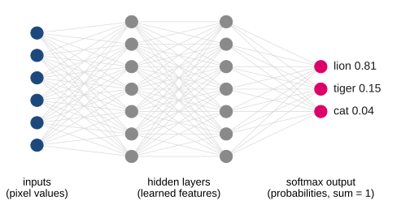

name: title layout: true class: cover --- count: false .section-mark.center[ ## Beyond two classes, and into deep learning <br /> Oscar Esteban <<code>oscar.esteban@hevs.ch</code>> <br /> EAD · Exploration avancée de données et intelligence décisionnelle · 16.10.2026 ] ??? --- name: newsection layout: true .perma-sidebar[ <p class="rotate"> <a rel="license" href="http://creativecommons.org/licenses/by/4.0/"><img alt="Creative Commons License" style="border-width:0; height: 20px; padding-top: 6px;" src="https://i.creativecommons.org/l/by/4.0/88x31.png" /></a> <span style="padding-left: 10px; font-weight: 600;">Beyond two classes (16.10.2026)</span> </p> ] --- .section-mark[ # From two classes to many ] --- # Seven quality grades, and two of them hold three wines in four .boxed-content.center[ <img src="images/wine-classes.svg" style="width: 78%;" /> ] .footnote[Wine Quality (Cortez et al. 2009, UCI, CC BY 4.0): 6,497 Portuguese red and white wines, 11 lab measurements, a taster's score.] ??? --- # Remove the duplicates before anything else .cards.cols-2[ .card.alert[ .kicker[in the file] .metric[1,177] rows are exact copies of another row (18%). ] .card[ .kicker[same model, 5-fold accuracy] .metric[0.67 → 0.58] with the copies, then without them. ] ] .large.center[A copy in training and its twin in the test fold: the model is graded on rows it has already seen.] ??? --- # The confusion matrix grows to N × N .pull-left[ <p></p> ] .pull-right.large[ <br /> Read **rows**: each one is an actual grade, split by what the model predicted. <br /> Most wines are predicted 5 or 6, whatever their grade. ] .footnote[Deduplicated data, random forest, 5-fold, scikit-learn. Row percentages.] ??? --- # Each class gets its own precision and recall .data-table.center[ | actual grade | 3 | 4 | 5 | 6 | 7 | 8 | 9 | |---|---|---|---|---|---|---|---| | wines | 30 | 206 | 1,752 | 2,323 | 856 | 148 | 5 | | recall | 0.00 | 0.02 | **0.63** | **0.73** | 0.31 | 0.00 | 0.00 | ] .large.center[*One-vs-rest*: each grade in turn is the positive class, all the others the negative. Everything from this morning applies, once per class.] ??? --- # One score for the whole model hides a choice .data-table.center[ | average | how | here | |---|---|---| | **micro** (= accuracy) | pool every decision | 0.58 | | **weighted** F1 | per-class F1, weighted by class size | 0.55 | | **macro** F1 | per-class F1, every class counts the same | **0.24** | | baseline | always say "6" | 0.44 accuracy | ] .large.center[Rare grades that matter (the 9s you sell at a premium) only show up in **macro**.] ??? --- # Hands-on 2: grade the wines .steps[ 1. Upload `winequality_all.csv` to a new project. 2. Remove the duplicates: visual recipe **Distinct**. 3. On the distinct dataset: **Lab → AutoML prediction**, target `quality`. 4. **Design → Target**: set the prediction type to **multiclass classification**. 5. **Design → Train/Test set**: K-fold cross-test, 5 folds, stratified. Train. 6. **Results**: open the confusion matrix. Which grades are never predicted? ] ??? --- # Hands-on 2, continued: three grades instead of seven .steps[ <ol start="7"> <li>Prepare recipe, Formula: <code>if(quality <= 5, "low", if(quality == 6, "medium", "high"))</code> into a column <code>grade</code>.</li> <li>New AutoML prediction on <code>grade</code>, same settings. Train.</li> <li>Look at the scores.</li> </ol> ] .admonition.question[ <i class="fa-solid fa-circle-question"></i> Every algorithm now scores 1.000. What happened? ] ??? --- # The old target was still a feature .boxed-content.large[ `quality` is still in the dataset, and Dataiku uses every column as an input by default. From `quality` the model reads `grade` back exactly. **Design → Features handling**: reject `quality`, and train again. ] .large.center[Re-encoding the target is the commonest leak of all.] ??? --- # Quality is ordered: say so in the model .cards.cols-3.vcenter[ .card[ .kicker[as classes] ### Classification Mistaking a 5 for a 6 costs the same as a 3 for a 9. ] .card[ .kicker[as a number] ### Regression Predict 5.7, then round or set thresholds. Keeps the order. ] .card.accent[ .kicker[as a business choice] ### Fewer grades Low / medium / high, cut where the price changes. ] ] ??? --- .section-mark[ # Deep learning for decisions ] --- # Deep learning pays off on images, text and sound .cards.cols-2.vcenter[ .card.accent[ .kicker[unstructured data] ### Deep learning Photos, documents, recordings: the useful features are not columns yet. The network learns them. ] .card.muted[ .kicker[tables, like this morning] ### Boosted trees Columns already are features. Gradient-boosted trees usually match or beat a network, at a fraction of the cost. ] ] ??? --- # A neural network maps pixels to class probabilities .boxed-content.center[ <p></p> ] .large.center[The softmax output is this afternoon's multi-class problem again.] ??? --- # Training adjusts the weights to make fewer mistakes .boxed-content.large[ * A **loss** measures how wrong the probabilities are on the training photos. * **Gradient descent** nudges every weight to lower the loss, batch after batch. * One pass over the training set is an **epoch**. More epochs fit the training photos better, and past a point fit new photos worse. ] ??? --- # A pretrained network has already learned to see .boxed-content.large[ *ImageNet*: 1.28 million labelled photos, 1,000 categories. Networks trained on it learn edges, textures, then parts and objects. **Transfer learning** keeps those layers and trains only a new last layer on your classes. A few dozen photos per class can be enough. ] ??? --- # Climb the ladder only as far as you need .cards.cols-4[ .card.accent[ .kicker[1 · no training] ### Zero-shot A foundation model told the class names. Zero photos. ] .card.accent[ .kicker[2 · today] ### New head Pretrained network frozen, last layer trained. Tens of photos per class. ] .card[ .kicker[3] ### Fine-tuning Some deep layers trained too. Hundreds of photos, a GPU. ] .card.muted[ .kicker[4 · rarely] ### From scratch Every weight learned. Hundreds of thousands of photos. ] ] .large.center[Each step up costs more data, more compute, and more to explain.] ??? --- # Hands-on 3: tell a lion from a tiger .steps[ 1. Create a managed **folder** `train` and upload the photos of `lion-tiger-train.zip`. 2. **List Contents** recipe on the folder, then a Prepare recipe: *Extract with regular expression* on `path`, pattern `([a-z]+)_[0-9]+`, into `label`. 3. **Lab → Image classification** on the folder, target `label`. 4. **Design**: pretrained model **EfficientNet B0**, fine-tuned layers **0**. Train. 5. **Results**: confusion matrix. How many test photos is the score based on? ] ??? --- # Hands-on 3, continued: score photos it has never seen .steps[ <ol start="6"> <li>Deploy the model to the flow.</li> <li>A second folder <code>test</code> with the photos of <code>lion-tiger-test.zip</code>; <strong>Score</strong> recipe with the model.</li> <li>Extract <code>label</code> from the path as in step 2, then a Formula <code>label == prediction</code>.</li> <li>Open the photos it got wrong. What do they have in common?</li> </ol> ] .admonition.question[ <i class="fa-solid fa-circle-question"></i> **Extra mile.** Add `cats-train.zip` to `train` and `cats-test.zip` to `test`, and retrain: three uneven classes. Which average would you report? ] ??? --- # A working model is the cheap part .cards.cols-4.vcenter[ .card[ .kicker[data] ### Labels Someone has to tag the photos, and check the tags. ] .card[ .kicker[compute] ### Training and serving Every prediction runs the whole network. ] .card[ .kicker[trust] ### Explanations Which pixels drove the decision? Saliency maps help, a little. ] .card.alert[ .kicker[law] ### Rights and people Photo licences, faces, and the EU AI Act. ] ] ??? --- # Three things to keep from today .boxed-content.large[ 1. The model gives probabilities; **you** choose the threshold, from the costs. 2. With many classes, say which average you report and why. 3. Start from a pretrained model, and climb no higher than the problem needs. ] .large.center[Next Friday: text mining and time series.] ???